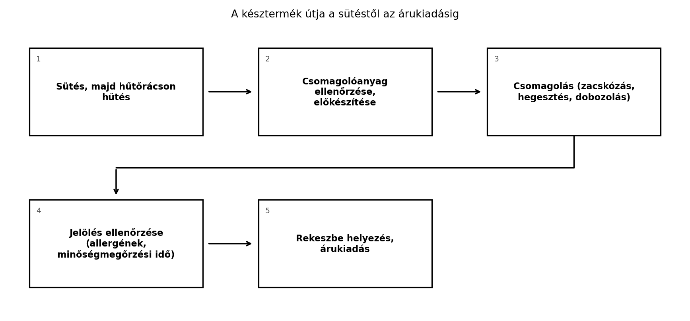

A csomagolás a sütőipari késztermék kezelésének utolsó, de az élelmiszer-biztonság és a vásárlói elégedettség szempontjából kiemelt lépése. A megfelelő csomagolóanyag megválasztása meghosszabbíthatja a termék eltarthatóságát, megőrizheti a héj ropogósságát vagy a bélzet puhaságát, és megakadályozhatja a penészedést. A rossz választás azonban páralecsapódást, a héj felpuhulását, penésztelepeket és akár fogyasztói panaszt vagy hatósági kifogást eredményezhet. Ebben az alfejezetben a sütőipari csomagolóanyagokat, azok átvételét, tárolását, az alapvető csomagolási módszereket, valamint a penészesedés és páralecsapódás elleni védelmet tanuljuk meg.

Az ábra értelmezése. A csomagolás nem önálló művelet: szorosan követi a hűtést, és megelőzi a jelölést és az árukiadást. Ha a termék csomagolás előtt nem hűlt le kellő mértékben, a csomagoláson belül kicsapódó nedvesség a penészgombák szaporodásának kedvez.
A pékségekben leggyakrabban használt papírok:
A sütőiparban a leggyakoribb csomagolófóliák polietilén (PE) és polipropilén (PP) alapúak:
Definíció. Élelmiszerrel érintkezésre szánt anyagnak nevezünk minden olyan csomagolóanyagot, eszközt, felületet vagy bevonatot, amely rendeltetésszerűen érintkezik élelmiszerrel. A sütőiparban ez a csomagolópapír, a zacskófólia, a doboz, a tálca, valamint a gépek, formák, munkalapok élelmiszerrel érintkező része.
Előírás. Az élelmiszerrel érintkező anyagokra vonatkozó keretrendelet az 1935/2004/EK rendelet, amely szerint az anyag nem adhatja át összetevőit az élelmiszernek olyan mennyiségben, amely veszélyeztetné az emberi egészséget, elfogadhatatlanul megváltoztatná az élelmiszer összetételét, vagy rontaná annak érzékszervi tulajdonságait. A konkrét anyagokra (műanyagok, papír, bevonatok) további uniós és nemzeti előírások vonatkoznak; ezek pontos számát és hatályosságát mindig ellenőrizni kell (ellenőrizendő: 1935/2004/EK rendelet hatályos módosításai és a kapcsolódó anyag-specifikus előírások).
Jelölés a gyakorlatban. Az élelmiszerrel még nem érintkező anyagon az „élelmiszerrel érintkezésre” felirat vagy a pohár-villa szimbólum (egy stilizált pohár és villa rajza) szükséges, kivéve, ha a rendeltetés nyilvánvaló (például kenyérzacskó, pékpapír-zacskó); emellett a gyártó/forgalmazó adatai és a tételazonosító is szerepel (ellenőrizendő: 1935/2004/EK rendelet). A pék átvételkor ellenőrzi a beszállító megfelelőségi nyilatkozatát és specifikációját (műanyagnál a 10/2011/EU rendelet szerint – ellenőrizendő), valamint – ha a rendeltetés nem nyilvánvaló – a feliratot vagy a pohár-villa szimbólumot. Ha sem nyilatkozat, sem jelölés nincs, az anyag nem használható, a tételt el kell különíteni, reklamálni kell (ellenőrizendő: 1935/2004/EK 15. cikk, 10/2011/EU).
A zacskózás a leggyakoribb sütőipari csomagolási mód: a terméket előre gyártott zacskóba helyezik, majd a nyílást méretre hajtják, lezárják (ragasztócsík, klipsz, hegesztés) vagy nyitva hagyják a pulton történő értékesítéshez. Kézi zacskózásnál a dolgozó tiszta kesztyűt vagy alapos kézmosás után dolgozhat; a zacskó belsejét nem érintheti meg szennyezett kézzel. A zacskózás során a termék tömegét gyakran ellenőrzik (nettó tömeg), mert a csomagolt terméknél a feltüntetett tömeg és a tényleges tömeg eltérése jelölési hiba.
A hegesztés során a fólia két rétegét hővel és nyomással összeolvasztják, így a csomagolás lezárása pára- és szennyeződésmentes lesz. A péknek ismernie kell a gép beállításait (hőmérséklet, hegesztési idő, nyomás) – ezek gyártói adatlap szerintiek (ellenőrizendő: a hegesztőgép gyártói útmutatója). A hegesztési varratnak folytonosnak, idegen anyagtól és ránctól mentesnek kell lennie; ha a varrat nem zár, a csomagolás nem véd.
Figyelem. A fóliahegesztő gép forró felülettel rendelkezik. A gép beállítását, tisztítását csak leállított, áramtalanított, visszakapcsolás ellen biztosított állapotban szabad végezni; a kezelőnek égés elleni védőeszközt kell használnia, ha a gép üzemel (ellenőrizendő: a gép gépkönyve és a munkavédelmi utasítás).
A védőgázas (MAP, modified atmosphere packaging) csomagolás során a csomagban lévő levegőt speciális gázkeverékkel (pl. szén-dioxid, nitrogén, oxigén – az összetétel a terméktől függ) cserélik. A sütőiparban ezt inkább szeletelt, pár nap eltarthatóságú termékek, rostban gazdag tartós pékáruk vagy csomagolt péksütemények esetén alkalmazzák. A cél a penészgombák és az oxidatív folyamatok lassítása. A gázkeverék összetétele, a fólia oxigén- és párazáró képessége, valamint a csomag zártsága kritikus tényező; a folyamat ellenőrzése a pékségben általában a csomagológép automatikáján és időszakos mintavételen alapul (ellenőrizendő: a gép gyártói utasítása és a HACCP-terv). A klasszikus pék szakmában ez inkább élelmiszeripari csomagolástechnikai ismeret, de a korszerű üzemekben előfordul.
Összefoglaló tabló. A fenti módszereket és zárásokat az alábbi ábra egymás mellett mutatja, mindegyiket egy jellemző termékkel és az anyag jelével. A ropogós péksütemény papírzacskóba (1) vagy perforált PP zacskóba (2) kerül, mert ezek engedik távozni a párát; a szeletelt kenyér klipszes PE zacskóba (3); a hegesztett zacskónál (4) a varrat minősége a döntő; a ragasztócsíkos zárást (5) a pultról értékesített csomagolt áruknál; a védőgázas tálcát (6) hosszabb eltarthatóságú, előre csomagolt termékeknél használják.
A választásnál két kérdést tegyünk fel: kell-e a párának távoznia (ropogós héj), és meddig kell a terméknek eltartania? Ellenőrzési pont minden módnál: a zárás folytonos, a csomagolóanyag élelmiszerrel érintkezésre alkalmas jelölésű. A HTML-kiadásban az egyes csomagolásokra mutatva megjelenik a jellemzőjük és a felhasználásuk.
Definíció. Csomagolóanyag-átvétel alatt a beszállított csomagolóanyagok mennyiségi és minőségi ellenőrzését, azonosítását, tételszámának rögzítését és a tárolóhelyre történő bevételezését értjük. Ez a nyomonkövethetőség része.
Átvételi ellenőrzés lépései.
Higiénia. A csomagolóanyag-átvételkor a dolgozó tiszta munkaruhát visel, és kezét nem érinti a csomagolóanyag belső felületéhez. A raklapot, a dobozokat nem szabad a földön tárolni; a csomagolóanyag raktárba csak zárt, eredeti csomagolásban kerülhet be.
Tárolás. A csomagolóanyagokat külön, száraz, tiszta, hűvös, szagtalan, kártevőktől védett helyiségben vagy polcon kell tárolni. A fóliákat és papírokat a padlótól elválasztva, portól és közvetlen napfénytől védve, a szállítási csomagolást bontás után is zártan kell tartani. A FIFO (first in, first out) elvet itt is be kell tartani: a legrégebbi tételt használjuk fel először. A különböző csomagolóanyagokat nem szabad vegyszerekkel, tisztítószerekkel vagy illatos anyagokkal együtt tárolni, mert a szag átvihető a termékre.
HACCP. A csomagolóanyag átvétele és tárolása a HACCP-rendszerben általában nem CCP, hanem GHP/GMP ellenőrzési pont, de bizonyos esetekben (pl. egy adott allergént nem tartalmazó termékekhez használt, dedikált csomagolóanyag) a szennyeződés kockázata miatt kritikus pont lehet. A pékség HACCP-terve határozza meg, hogy itt milyen ellenőrzés, dokumentálás szükséges (ellenőrizendő: a pékség HACCP-terve).
A csomagolt pékáruknál a két leggyakoribb minőségi hiba a penészedés és a héj felpuhulása, amelyek gyakran páralecsapódásra vezethetők vissza.
Fizikai háttér. A sütőből kikerülő termék belsejében a bélzet hőmérséklete még fogyasztási hőmérséklet fölé esik (a maghőmérséklet 90–97 °C körül lehet, termékenként eltérő – ellenőrizendő: az aktuális gyártástechnológiai lap). Ha a meleg terméket azonnal zacskózzuk, a bélzetből felszálló vízgőz a fólia belső felületén lecsapódik. Ez a nedves filmréteg kedvez a penészspórák csírázásának, rontja a termék érzékszervi tulajdonságait, és növeli a mikrobiológiai romlás kockázatát.
Szabály. A csomagolandó terméket mindig a termékre jellemző hűtőrácson vagy hűtőterületen kell visszahűteni, amíg a bélzet hőmérséklete körülbelül 30–35 °C alá nem csökken (tanulási példa; a pontos hőmérsékletet a termék jellege és a csomagolás módja határozza meg – ellenőrizendő: üzemi technológiai lap). A héjjel rendelkező ropogós termékeknél a túlzott visszahűtés is kerülendő, mert a héj elveszti ropogósságát; a perforált fólia segíti a nedvesség távozását.
Megoldások a páralecsapódás ellen: - A terméket csomagolás előtt mérsékelt hőmérsékletűre hűtjük. - A csomagolóanyag páraáteresztő képességét a termék héjának jellegéhez igazítjuk (pl. ropogós termékhez perforált fóliát választunk). - A csomagolást nem szabad túl szorosan a meleg termékre zárni; a felesleges levegőt ki lehet nyomni, de a terméket nem szabad összenyomni. - A tárolási hőmérséklet ingadozása is páralecsapódást okozhat, ezért a csomagolt terméket egyenletes hőmérsékleten, száraz környezetben kell tárolni.
Az ábra bal oldalán a melegen zacskózott kenyér (1) bélzetéből pára száll fel (2), és a hidegebb fólia belső falán cseppekben lecsapódik (3); a nedves héj megpuhul, később penészfolt jelenik meg rajta (4). A jobb oldalon a kenyér előbb rácson hűl (5), és csak utána kerül a zacskóba: a fólia száraz marad (6), ropogós termékhez pedig perforált fóliát választunk (7).
Röviden: előbb hűtés, csak utána csomagolás. Ellenőrzési pont: a csomagolás előtt mért bélhőmérséklet (a technológiai lap szerinti érték, tanulási példaként 30–35 °C alatt) és a fólia belső felülete – ha cseppet látunk rajta, a tétel túl melegen került a zacskóba. A HTML-kiadásban a „Hibás” és „Helyes” gomb vált a két eset között.
Allergén. A csomagolóanyag önmagában nem allergén, de a csomagolás során a közös eszközök, a kesztyű, a munkafelület, a csomagológép vágó- és hegesztőfelülete allergénmaradványt vihet át. Ezért az adott allergént nem tartalmazó termékek csomagolásakor vagy dedikált, elkülönített csomagolóeszközöket kell használni, vagy a csomagolóeszközt alaposan meg kell tisztítani a váltás előtt. A gluténmentes termékek csomagolása különösen érzékeny; itt tilos ugyanazt a zacskózó asztalt vagy kesztyűt használni, mint a búzalisztes termékeknél (ellenőrizendő: a pékség allergén-kezelési terve).
Előírás. Az élelmiszerrel érintkező anyagok biztonságosságát a 1935/2004/EK rendelet és a hozzá kapcsolódó anyag-specifikus jogszabályok szabályozzák. A csomagolt termék jelölésére a fogyasztói tájékoztatásról szóló 1169/2011/EU rendelet vonatkozik, beleértve az allergének kiemelését és a nettó tömeg feltüntetését. A Magyar Élelmiszerkönyv és a NÉBIH útmutatói további ágazati követelményeket tartalmazhatnak. A pontos hivatkozásokat, az előírt tűréseket és a mentességi köröket mindig ellenőrizni kell (ellenőrizendő: 1169/2011/EU, 1935/2004/EK, Magyar Élelmiszerkönyv sütőipari előírásai, NÉBIH útmutatók).
Szabály. A csomagolóanyag nem helyettesítheti a termék biztonságát: a csomagolás csak akkor véd, ha a termék maga is megfelelően sült, hűlt, és a csomagolás higiénikus körülmények között történt. A jelölésen szereplő adatoknak meg kell egyezniük a tényleges termékkel és a gyártmánylappal.
Az alábbi technológiai lap egy tanulási példa; az értékek termékenként, gépenként és üzemenként eltérhetnek (ellenőrizendő: a pékség technológiai lapja és a gyártói adatlapok).
| Anyag/eszköz | Típus | Mennyiség | Megjegyzés |
|---|---|---|---|
| Kenyérzacskó | PE vagy PP, perforálatlan | 50 db | Élelmiszerrel érintkezésre alkalmas jelöléssel |
| Címke | Papír vagy fólia | 50 db | Az 1169/2011/EU szerinti jelölési adatokkal |
| Rekesz | Műanyag, tisztítható | 2 db | Termék szállításához |
| Kesztyű | Egyszer használatos, nitril | 1 doboz | Csomagoláshoz |
A termék búzalisztet (glutén) tartalmaz; a csomagolóanyag nem visz be allergént, de a csomagolási művelet során kerülni kell a más allergén (pl. tojás, tej, szezám) nyomokkal történő keresztszennyeződést. A csomagolóeszközt az allergéntartalmú termékek után tisztítani kell, mielőtt az adott allergént nem tartalmazó terméket csomagolunk.
A csomagolás minőségi jellemzői: - A csomagolóanyag ép, szennyeződéstől, szagtól, penésztől mentes. - A fólia, papír nem szakadt, a hegesztési varrat folytonos, a zacskó záródása megfelelő. - A termék nem nyomódott össze; a héj nem nyirkos, a zacskó belsejében nincs páralecsapódás. - A jelölés pontosan megegyezik a termékkel; az allergének kiemelése megfelelő. - A tétel átlagtömege nem kisebb a névleges tömegnél, és az egyedi csomagok a megengedett negatív eltérésen belül vannak (ellenőrizendő: a vonatkozó tömegszabály).
Ellenőrzési módszer. Minden műszakban, a csomagolás megkezdése előtt a kezelő vizsgálja meg a csomagolóanyagokat (szemrevételezés, szag), és a csomagolás során szúrópróbaszerűen ellenőrizze a tömeg és a zárás minőségét. Az ellenőrzés eredményét a csomagolási naplóban kell rögzíteni.
1. Hiba: Meleg termék csomagolása. - Tünet: a zacskó belseje párás, a héj felpuhul, a termék hamar megpenészedik. - Ok: a terméket nem hűtötték vissza megfelelően; a bélzetből felszálló pára lecsapódik. - Megelőzés/javítás: csomagolás előtt mindig ellenőrizzük a termék bélhőmérsékletét; csak a technológiai lap szerinti hőmérséklet alatt csomagoljunk.
2. Hiba: Nem megfelelő fólia választása ropogós termékhez. - Tünet: a bagett vagy ropogós zsemle héja megpuhul, a fogyasztó „kekszes” állagot várna. - Ok: perforálatlan, magas párazárású fóliát használtak, így a termék nedvessége nem tudott távozni. - Megelőzés/javítás: ropogós héjú termékhez perforált fóliát válasszunk; puhább bélű kenyérhez perforálatlan fólia is megfelelő.
3. Hiba: Szennyezett vagy nem élelmiszer-ipari csomagolóanyag használata. - Tünet: a csomagolóanyag szaga átadódik a terméknek; a fólia nem rendelkezik élelmiszerrel érintkezésre alkalmas jelöléssel. - Ok: a csomagolóanyagot nem ellenőrizték átvételkor, vagy vegyszerek mellett tárolták. - Megelőzés/javítás: csak jelölt, nyilvántartásba vett, élelmiszer-alkalmas anyagot használjunk; a csomagolóanyagot elkülönítve tároljuk.
4. Hiba: Allergén keresztszennyeződés a csomagolásnál. - Tünet: gluténmentes termék csomagolásán gluténnyomok, vagy tojásallergén kerül a tojásmentes termékre. - Ok: közös csomagolóasztalt, kesztyűt vagy eszközt használtak előzetes tisztítás nélkül. - Megelőzés/javítás: az adott allergént nem tartalmazó termékek csomagolásához külön eszközt, tiszta kesztyűt, letisztított felületet használjunk; a váltást dokumentáljuk.
Megoldások az önellenőrzésre a ### Megoldások
elején találhatók.
1. feladat (A). Sorold fel a sütőiparban leggyakrabban használt három csomagolóanyag-típust, és mindegyikre adj egy-egy felhasználási példát!
2. feladat (A). Határozd meg, milyen jelölés hiányában tilos egy csomagolóanyagot élelmiszer csomagolására használni! Mi a szabály?
3. feladat (B). Egy pék 100 db 0,5 kg-os kenyeret csomagol. A zacskó tömege 2 g/db, a címke 1 g/db; a termékeket 10 db, egyenként 1,5 kg-os rekeszben szállítják. Mennyi a nettó tömeg, a csomagolóanyag (zacskó + címke) tömege és a szállítmány bruttó tömege?
4. feladat (B). Csomagolás előtt a kenyér maghőmérséklete 45 °C. A technológiai lap szerint 30 °C alatt szabad csak csomagolni. A hűtőrácson a kenyér 10 perc alatt 5 °C-ot hűl. Mennyi idő múlva lehet legkorábban csomagolni, ha a hűlés egyenletes?
5. feladat (C). Egy üzemben a héj nélküli puha termékeket perforált fóliába csomagolják. Milyen hibát okoz ez, és milyen javító intézkedést javasolsz?
6. feladat (D). Egy gluténmentesként jelölt péksüteményt csomagolnak ugyanazon az asztalon, ahol korábban búzalisztes terméket csomagoltak. A dolgozó kesztyűt cserél, de az asztalt nem tisztítja. Milyen kockázatot hordoz ez, és mi a helyes eljárás? Fogalmazz meg egy rövid ellenőrző listát a gluténmentes termék biztonságos csomagolásához!
Önellenőrzés – válaszok
Feladatok megoldása
1. feladat. Papír (pl. pergamen a sütemény alátétjeként), PE/PP fólia (pl. kenyérzacskó), hullámpapír doboz (pl. tortához). Más jó válasz is elfogadható.
2. feladat. Ha sem megfelelőségi nyilatkozat, sem jelölés (felirat vagy pohár-villa szimbólum) nincs, és a rendeltetés nem nyilvánvaló, a csomagolóanyag nem használható élelmiszer-csomagolásra. A szabályt az 1935/2004/EK rendelet és műanyagnál a 10/2011/EU rendelet írja elő (ellenőrizendő: a pontos követelmények). A tételt el kell különíteni és jelezni a felettesnek.
3. feladat. Nettó tömeg: 100 db × 0,5 kg = 50 kg. Csomagolóanyag tömege: zacskó 100 × 2 g = 200 g = 0,2 kg; címke 100 × 1 g = 100 g = 0,1 kg; összesen 0,3 kg. A rekesz újrahasználható szállítóeszköz, nem csomagolóanyag; tömege 10 × 1,5 kg = 15 kg. A szállítmány bruttó tömege = 50 + 0,3 + 15 = 65,3 kg.
4. feladat. A hűtési sebesség: 5 °C / 10 perc = 0,5 °C/perc. A 45 °C-ról 30 °C-ra 15 °C-ot kell hűlni. Idő = 15 °C / 0,5 °C/perc = 30 perc. Tehát legalább 30 perc hűtés szükséges, ha a hűlés egyenletes; a valóságban a hűlés nem lineáris, ezért hőmérővel kell ellenőrizni.
5. feladat. A perforált fólia a puha termékből kiengedi a nedvességet, így a termék hamar kiszárad. Javaslat: perforálatlan fóliát használjunk, vagy csomagolás előtt a terméket a megfelelő nedvességtartalomra kell beállítani. A fólia választását a termék héjának jellegéhez kell igazítani.
6. feladat. A gluténmentes termék a búzalisztes maradványoktól gluténnel szennyeződhet, ami a fogyasztó egészségét veszélyezteti. A „gluténmentes” állítás csak a vonatkozó előírás feltételeivel (legfeljebb 20 mg/kg glutén; 828/2014/EU, ellenőrizendő) és igazolt elkülönítéssel tehető; ha a keresztszennyeződés nem zárható ki, az állítás nem használható. Helyes eljárás: az asztal és minden eszköz nedves tisztítása, fertőtlenítése; új kesztyű használata; dedikált zacskózó és mérőeszközök; a váltás dokumentálása; lehetőleg a gluténmentes terméket a búzalisztes gyártás előtt, vagy külön időben csomagoljuk.
A csomagolóanyagok kiválasztása és kezelése közvetlenül befolyásolja a sütőipari termék biztonságát, eltarthatóságát és érzékszervi minőségét. A sütőiparban használt csomagolóanyagok főként papír (pergamen, zsírpapír), műanyag fóliák (PE, PP, perforált fólia) és karton/műanyag dobozok. Minden csomagolóanyagnak élelmiszerrel érintkezésre alkalmasnak kell lennie, amit a pohár-villa szimbólum vagy az „élelmiszerrel érintkezésre alkalmas” felirat jelez. A csomagolóanyag átvételénél ellenőrizni kell az épséget, a tisztaságot és a jelölést; a tárolás száraz, tiszta, elkülönített helyen történjen, FIFO-elv szerint. A meleg termék csomagolása páralecsapódást okoz, ami penészedéshez vezet, ezért a terméket mindig a technológiai lapban előírt hőmérsékletre kell hűteni csomagolás előtt. A csomagolási módszerek közül a zacskózás, a hegesztés és a védőgázas csomagolás a legjelentősebb; mindegyiknél a termék jellegéhez illő fóliát és zárást kell választani. Az allergénmentes termékek csomagolásakor kiemelten fontos a keresztszennyeződés megelőzése.
Továbbvitt eredmény. A csomagolóanyagok típusai, az élelmiszerrel érintkező anyagok ellenőrzése, a tárolási és hűtési szabályok, valamint a jelölési követelmények itt szerzett ismereteit közvetlenül használjuk a Szeletelés, csomagológépek és jelölés alfejezetben a gépi csomagolásnál, a Tartós kenyerek, kétszersültek, morzsa és babajka alfejezetben a hosszabb eltarthatóságú termékek csomagolásánál, valamint a Mézeskalács csomagolása, tárolása, minőségvizsgálata és hibái alfejezetben a mézes készítmények védelménél.
A technológiai lapban szereplő hőmérsékletek, tárolási idők és tűrések tanulási példák; az üzemi gyakorlatban a pékség technológiai lapja és HACCP-terve az irányadó.